This section comprises the below topics:
The appearance settings of the RibbonControlAdv are discussed under the below sections:
3.15.1.2.4.1.1 OfficeColorSchemes
The Ribbon Control Adv has come up with the same visual style of Office 2007. The users can choose between three colors Blue, Silver and Black which, can be set through the OfficeColorScheme property of the RibbonControlAdv class.
|
[C#]
this.ribbonControlAdv1.OfficeColorScheme = Syncfusion.Windows.Forms.Tools.ToolStripEx.ColorScheme.Blue; |
|
[VB.NET]
Me.ribbonControlAdv1.OfficeColorScheme = Syncfusion.Windows.Forms.Tools.ToolStripEx.ColorScheme.Blue |
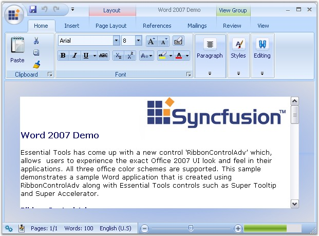
Figure 1380: Blue Color Scheme
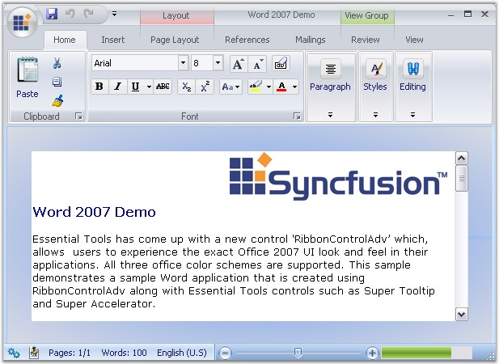
Figure 1381: Silver Color Scheme
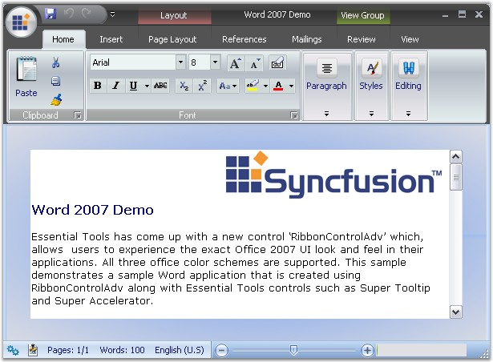
Figure 1382: Black Color Scheme
See Also
ColorSchemes for RibbonForm
3.15.1.2.4.1.2 Custom Color Scheme
To set custom colors, set the ColorScheme as Managed. Then set the desired color using the Syncfusion.Windows.Forms.Tools.Office12ColorTable.ApplyManagedColors method.
|
[C#]
//set the custom color to the form and RibbonControlAdv this.ColorScheme = ColorSchemeType.Managed; this.ribbonControlAdv1.OfficeColorScheme = ToolStripEx.ColorScheme.Managed; Office12ColorTable.ApplyManagedColors(this, Color.Red); |
|
[VB]
'set the custom color to the form and RibbonControlAdv Me.ColorScheme = ColorSchemeType.Managed Me.ribbonControlAdv1.OfficeColorScheme = ToolStripEx.ColorScheme.Managed Office12ColorTable.ApplyManagedColors(Me, Color.Red) |
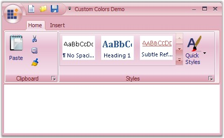
Figure 1383: Custom Color (Red) applied to the RibbonControlAdv
3.15.1.2.4.1.3 Caption ForeColor
Title color of the RibbonControlAdv can be set with the TitleColor property.
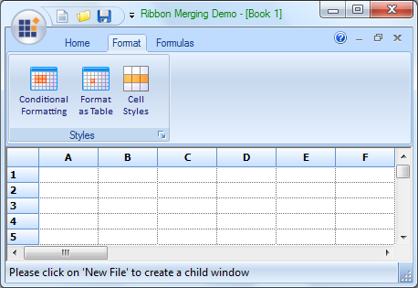
Figure 1384: RibbonControlAdv with TitleColor set to Green
|
[C#] this.ribbonControlAdv1.TitleColor = Color.Green; |
|
[VB] Me.ribbonControlAdv1.TitleColor = Color.Green; |
RibbonControlAdv allows merging the RibbonPanel in a child form to the RibbonPanel in the parent form without a single line of code.
To merge the RibbonPanel in the ChildForm with the RibbonPanel in the parent form, follow the below given steps.
Through Designer
In a Ribbonform, add a RibbonControlAdv control and the required ToolStripTabItems and the ToolStripEx items.
From the ToolBox, add a RibbonPanelMergeContainer to the ChildForm. ToolStripEx can be added into this by right Clicking on it.
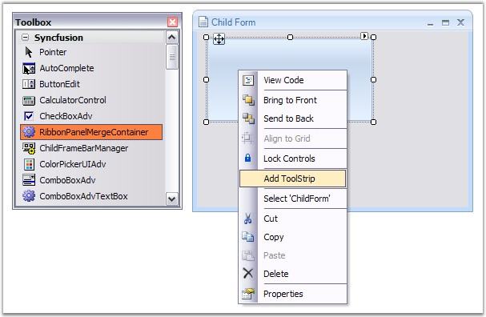
Figure 1385: ToolStrip added to the RibbonPanelMergeContainer in the Child Form
Now add this ChildForm to the RibbonForm that is the MDIParent of the ChildForm in the default manner.
|
[C#]
ChildForm frm = new ChildForm(); frm.MdiParent = this; frm.Show(); |
|
[VB]
Dim frm As ChildForm = New ChildForm() frm.MdiParent = Me frm.Show() |
 Note: The form's IsMDIContainer property
must be set as true. Also the MDIParent Ribbonform should host a
RibbonControlAdv to get the ChildForm's panels to be merged.
Note: The form's IsMDIContainer property
must be set as true. Also the MDIParent Ribbonform should host a
RibbonControlAdv to get the ChildForm's panels to be merged.
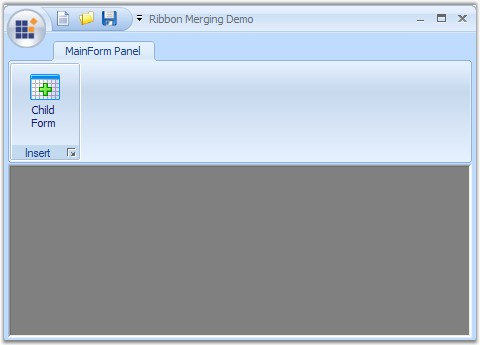
Figure 1386: Child Form added to Ribbon Form
Run the sample to view the ChildForm and the RibbonPanel merged with the RibbonControlAdv in the ParentForm.
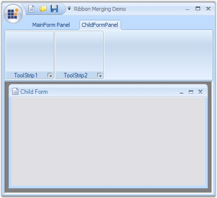
Figure 1387: ChildForm and RibbonPanel merged with the RibbonControlAdv
RibbonControlAdv allows to create TabGroups using the TabGroups property available for the RibbonControlAdv.
Creating TabGroup
Through Designer
1. Clicking the TabGroup property will pop up a window like the one below and using this, number of groups can be added and customized using the Color, Name and Visible properties provided to the right of the window.
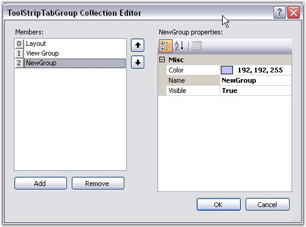
Figure 1388: TabGroup Collection Editor
2. Now create a ToolStripTabItem using the smart tag of the Ribbon.
3. Switch to the properties grid of the ToolStripTabItem, and select the tabgroup you have added through TabGroup property.
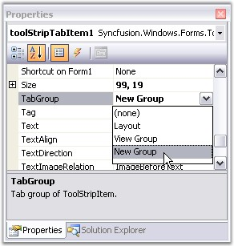
Figure 1389: Selecting the Tab Group
4. This will display the tab items in the RibbonControlAdv as shown in the image below.
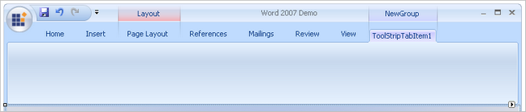
Figure 1390: RibbonControlAdv with Tab Group
Through Code
|
[C#]
this.ribbonControlAdv1.TabGroups.Add(toolStripTabGroup3); Syncfusion.Windows.Forms.Tools.ToolStripTabGroup toolStripTabGroup3 = new Syncfusion.Windows.Forms.Tools.ToolStripTabGroup(); this.ribbonControlAdv1.TabGroups.Add(toolStripTabGroup3); this.ribbonControlAdv1.TabGroups.SetTabGroup(pageLayoutTabItem, toolStripTabGroup1); |
|
[VB.NET]
Me.ribbonControlAdv1.TabGroups.Add(toolStripTabGroup3) Dim toolStripTabGroup3 As Syncfusion.Windows.Forms.Tools.ToolStripTabGroup = New Syncfusion.Windows.Forms.Tools.ToolStripTabGroup Me.ribbonControlAdv1.TabGroups.Add(toolStripTabGroup3) Me.ribbonControlAdv1.TabGroups.SetTabGroup(pageLayoutTabItem, toolStripTabGroup1) |
Customization
Using the Color property, the color for the tabs can be set. Text for the tabs can be specified through Name property and the tabs can be shown or hidden using Visible property.
Programmatically these properties can be set using the below code snippets.
|
[C#]
toolStripTabGroup3.Color = System.Drawing.Color.DarkBlue; toolStripTabGroup3.Name = "New Group"; toolStripTabGroup3.Visible = true; |
|
[VB.NET]
toolStripTabGroup3.Color = System.Drawing.Color.DarkBlue toolStripTabGroup3.Name = "New Group" toolStripTabGroup3.Visible = True |
This section describes how to customize a normal windows form's title bar appearance using the RibbonControlAdv.
Form Title Bar Settings
When an application is created, it is usually displayed with the form title bar. The RibbonControlAdv provides option to replace this title bar with the built-in RibbonControlAdv system buttons and this can be enabled by setting the IsFormManager property to true.
|
[C#]
this.ribbonControlAdv1.IsFormManager = true; |
|
[VB.NET]
Me.ribbonControlAdv1.IsFormManager = True |
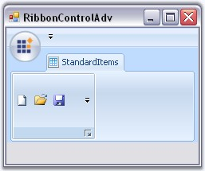
Figure 1391: IsFormManager = "False"
Title Settings
The below properties deals with Ribbon title settings.
|
Property |
Description |
|
TitleAlignment |
Sets the alignment of the Title. |
|
TitleFont |
Sets the font style of the title. |
|
TitleColor |
Sets the font color of the title. |
|
[C#]
this.ribbonControlAdv1.TitleAlignment = Syncfusion.Windows.Forms.Tools.TextAlignment.Center; this.ribbonControlAdv1.TitleFont = new System.Drawing.Font("Arial", 9.75F); this.ribbonControlAdv1.TitleColor = Color.GreenYellow; |
|
[VB.NET]
Me.ribbonControlAdv1.TitleAlignment = Syncfusion.Windows.Forms.Tools.TextAlignment.Center Me.ribbonControlAdv1.TitleFont = New System.Drawing.Font("Arial", 9.75F) Me.ribbonControlAdv1.TitleColor = Color.GreenYellow |
RibbonControlAdv comes with persistence support. Using this we can restore the saved state of the ribbon control.
Persistence works for the
following.
· The items in the QuickAccessToolBar that are added through the "Customize Quick Access ToolBar" can be persisted.
· Items added through the context menu that appears while clicking the dropdown arrow to the right of the QuickAccessToolBar can be persisted.
· The collapsed / expanded / floating state of the RibbonPanel can be persisted.
· The position of the QuickAccessToolBar, either below or above the ribbon panel can be persisted.